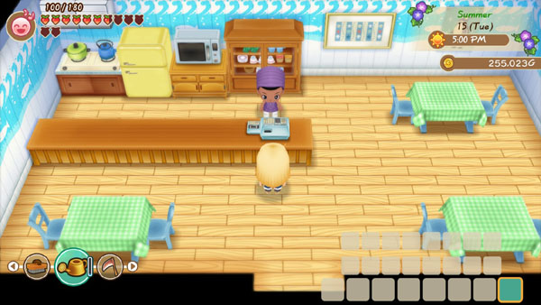

Café de la playa de la ciudad Mineral



El café de Kai, situado junto a la playa, solo abre durante la temporada de verano. Abre el local desde las 10:00 hasta las 13:00, hace una pausa al mediodía en la playa y luego vuelve para un servicio de 17:00 a 19:00. Su local está cerrado todo el día los domingos. El edificio permanece cerrado durante la primavera, el otoño y el invierno.
| Horas |
|
|---|---|
| Cerrado | Domingo. |
| Dirigido por |
|
Productos
| Nombre | Disponibilidad | Costo |
|---|---|---|
| Agua | Todo el dia | 0 G |
| Maíz Asado | Comienzo del juego | 250 G |
| Espaguetis | Comienzo del juego | 300 G |
| Pizza | Comienzo del juego | 200 G |
| Hielo picado | Comienzo del juego | 300 G |
Nota: Comerás automáticamente cualquier comida que compres en la posada. Comer la comida no agrega la receta a tu libro de cocina.